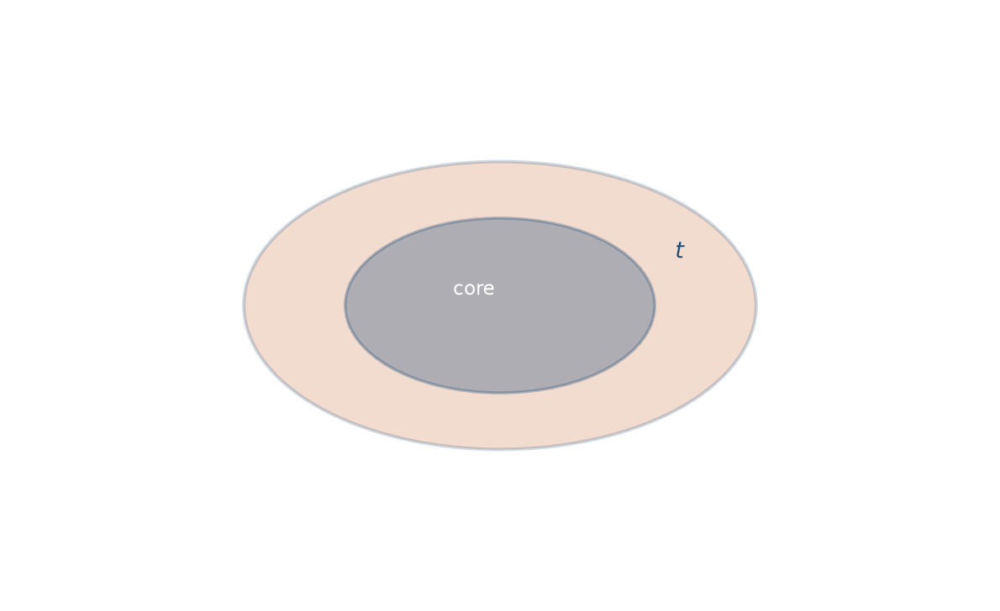
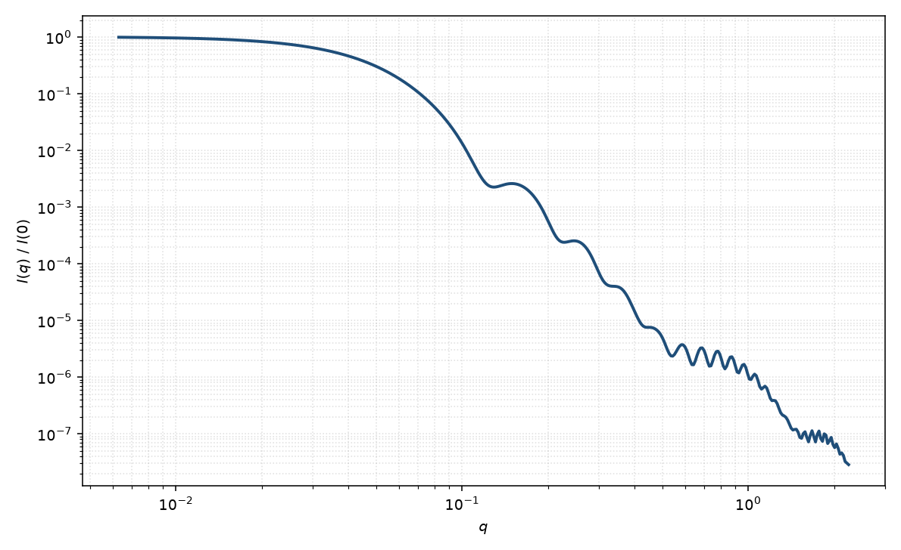

核壳椭球
core-shell ellipsoid
适用场景
核与壳都是旋转椭球、且共焦点的两段均匀散射长度密度剖面。适用于略扁/略长的核–冠状胶束、带溶剂化壳的椭球胶体，以及对比变分后仍需两段椭球剖面的体系。
共焦约定使壳厚沿法向不均匀：长轴端更“薄”、赤道更“厚”，或反过来取决于半轴。若壳只是均匀外扩（相似放大），几何不同，拟合时不要混用两种厚度定义。轴比接近 1 时退化为核壳球；核衬度匹配溶剂时接近空心椭球壳。
壳厚、核半轴与两段衬度高度相关。有中子 H/D 或 ASAXS 对比点时，简并可显著减弱。
物理图像
共焦核壳：外壳半轴满足 $R_{\perp,\mathrm{s}}^2=R_{\perp,\mathrm{c}}^2+t^2$、$R_{\parallel,\mathrm{s}}^2=R_{\parallel,\mathrm{c}}^2+t^2$，从而与核共用焦点。每一取向的振幅是核、壳两个有效球振幅的衬度加权和，再对 $\alpha$ 粉末平均（Chen 胶束图像；Pedersen 综述写法）。
中等 $q$ 的肩峰或极小位移来自核–壳干涉。高 $q$ 仍由最锐的密度跳变控制。取向平均会进一步抹浅振荡。
示意图


核心公式
出发点
稀释、取向无规的粒子，相干散射振幅是衬度对平面波相位的体积分
$$F(\mathbf{q})=\int \bigl[\rho(\mathbf{r})-\rho_{\mathrm{solv}}\bigr]\,\mathrm{e}^{i\mathbf{q}\cdot\mathbf{r}}\,\mathrm{d}^3r.$$核、壳取分段常数：共焦核椭球内为 $\rho_c$，核与外壳之间为 $\rho_s$，之外为溶剂。傅里叶变换对体积可加，故总振幅是两层均匀椭球振幅之差。
推导
均匀椭球由单位球的仿射像给出：取向 $\alpha$ 上振幅为 $\Delta\rho\,V\Phi(q R_{\mathrm{eff}}(\alpha))$，其中 $\Phi(x)=3(\sin x-x\cos x)/x^3$，$V(R_\perp,R_\parallel)=\frac{4}{3}\pi R_\perp^2 R_\parallel$，
$$R_{\mathrm{eff}}(\alpha)=\sqrt{R_\perp^2\sin^2\alpha+R_\parallel^2\cos^2\alpha}.$$把空间写成“外壳相对溶剂”加“核相对壳”：外壳贡献 $(\rho_s-\rho_{\mathrm{solv}})V_s\Phi(q R_{\mathrm{s,eff}})$，核相对壳的超额 $(\rho_c-\rho_s)V_c\Phi(q R_{\mathrm{c,eff}})$。于是
$$A(q,\alpha)=(\rho_c-\rho_s)V_c\Phi\bigl(q R_{\mathrm{c,eff}}(\alpha)\bigr)+(\rho_s-\rho_{\mathrm{solv}})V_s\Phi\bigl(q R_{\mathrm{s,eff}}(\alpha)\bigr).$$共焦约定 $R_{\perp,\mathrm{s}}^2=R_{\perp,\mathrm{c}}^2+t^2$、$R_{\parallel,\mathrm{s}}^2=R_{\parallel,\mathrm{c}}^2+t^2$，核与壳共用焦点；$t$ 不是沿法向的均匀厚度。单轴粉末平均
$$P(q)=\frac{\displaystyle\int_0^{\pi/2}|A(q,\alpha)|^2\sin\alpha\,\mathrm{d}\alpha}{\displaystyle\int_0^{\pi/2}|A(0,\alpha)|^2\sin\alpha\,\mathrm{d}\alpha}.$$$A(0)=(\rho_c-\rho_s)V_c+(\rho_s-\rho_{\mathrm{solv}})V_s$。稀溶液 $I(q)=n\langle|A|^2\rangle+B$。
低 $q$ 与渐近
$\Phi=1-x^2/10+O(x^4)$。核、壳共心，回转半径是衬度加权的二阶矩。均匀椭球 $R_g^2=(2R_\perp^2+R_\parallel^2)/5$，故
$$R_g^2=\frac{(\rho_c-\rho_s)V_c R_{g,\mathrm{c}}^2+(\rho_s-\rho_{\mathrm{solv}})V_s R_{g,\mathrm{s}}^2}{(\rho_c-\rho_s)V_c+(\rho_s-\rho_{\mathrm{solv}})V_s}.$$$\rho_s=\rho_c$ 时回到均匀外壳椭球。Guinier 指数形式在 $qR_g\lesssim 1$ 可用。
极小由核、壳两项干涉决定，相对均匀椭球移动。大 $q$ 时每项 $\Phi\sim 3\cos x/x^2$，尖锐界面包络仍是 Porod $q^{-4}$，拍频反映两套有效半径；取向平均再把振荡抹浅。
参数表
| 参数 | 符号 | 含义 | 单位 | 典型范围 |
|---|---|---|---|---|
| 核赤道 / 极半径 | $R_{\perp,\mathrm{c}}$, $R_{\parallel,\mathrm{c}}$ | 均匀核的两半轴 | Å 或 nm | 10–400 Å |
| 共焦参数 | $t$ | 使外壳与核共焦的长度，$R_{\mathrm{s}}^2=R_{\mathrm{c}}^2+t^2$ | Å 或 nm | 5–80 Å |
| 核 / 壳 / 溶剂 SLD | $\rho_c,\rho_s,\rho_{\mathrm{solv}}$ | 三段散射长度密度 | Å$^{-2}$ | 组成与对比决定 |
| 取向角 | $\theta,\phi$ | 对称轴取向（二维） | 度 | 由取向分布约束 |
| 标度 / 本底 | $n$, $B$ | 数密度与本底 | 与强度单位一致 | 实验相关 |
拟合注意
衬度比、壳参数 $t$ 与核半轴是主简并。优先固定由化学计量或对比实验得到的 $\rho$，只放几何；或固定 $t$、拟合衬度。不要把共焦 $t$ 当成沿法向的均匀壳厚。
多分散通常加在核尺寸或 $t$ 上，同样抹平振荡。一维数据上轴比与多分散几乎不可分。
磁性：磁核加非磁壳（或磁死层）时，磁 SLD 剖面与核 SLD 剖面独立；须分通道，而不是只用一套 $\Delta\rho$。二维取向 $\theta,\phi$ 对核与壳相同，但磁矩方向另有因子。
相近模型
参考文献
- Chen, S.-H. Small-angle neutron scattering studies of the structure and interaction in micellar and microemulsion systems. Annu. Rev. Phys. Chem. 1986, 37, 351–399. DOI: 10.1146/annurev.pc.37.100186.002031
- Pedersen, J. S. Analysis of small-angle scattering data from colloids and polymer solutions: modeling and least-squares fitting. J. Appl. Cryst. 1997, 30, 339–354. DOI: 10.1107/S0021889897002532